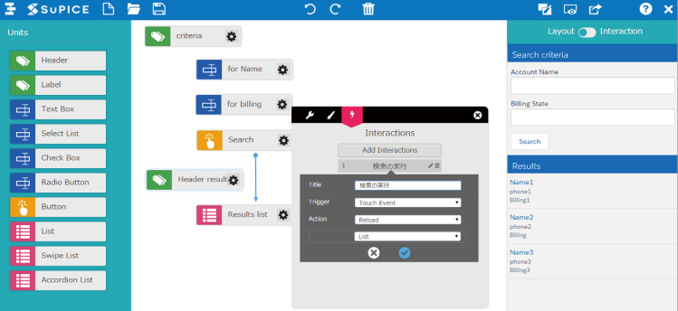

TypeScript + React入門
@rchaser53

誰?
| 所属: | 株式会社テラスカイ 製品開発部 |
| 名前: | 吉澤 峻行 |
| 担当製品: | SuPICE |
SuPICE
本日伝えたいこと
- 静的解析があると本当に楽
- ゆるく導入してもメリットはある
- 少しずつ学んでいく
(TypeScriptでもFlowでもOK)
本日伝えないこと
- TypeScriptやReactの文法など具体的な情報
(日本語記事いっぱいあるので読んでください)
本日のリポジトリ
静的解析があると本当に楽
- N番煎じなので静的解析については略
- 補完や構文エラーが出るのは非常に便利
- visual studio code優秀
(好きなeditorを使いたいならtsserverで頑張ろう)
補完機能は思ったより大事
- オブジェクトの構造の把握が容易になる
- interfaceを充実させれば下手なドキュメントより優秀?
=> 新規メンバーや臨時メンバーが入りやすい
=> リファクタリングもしやすい
(エラーが出るから少なくともメンテはされる)
ゆるく導入してもメリットはある
- ハードルは日に日に下がっている
- TypeScript 2系で設定は大分楽になった
- TypeScript 2.1.4でmoduleの宣言も不要に
例1. propsのinterfaceだけでも効果あり
export interface Props {
name: string
label: string
index: number
}
export class Row extends React.Component< Props, {} > {
// 略
}
例2. 導入が楽なところから攻める(tsconfig編)
- noUnusedLocals
- noUnusedParameters
使用していないローカル変数をチェックする
使用していない引数をチェックする
例2. 導入が楽なところから攻める(型編)
- readonly
propertyを読取り専用にする
export interface Circle {
readonly radius: number
x: number
y: number
}
let circleA: CirCle = { radius: 10, x: 5, y: 5 }
circleA.radiux = 20 // Error!
circleA.x = 10 // ok
少しずつ学んでいく
- 一から全部やろうとするから辛い
- 空いた時間で少しずつ綺麗にしていく
- 最初のうちは分かる物だけ使えばよい
(ファイル、関数、オブジェクト単位で少しずつ)
分かる機能から始める
- 非常に多機能。最初から全部は辛い
- 簡単なものから使っていく
- 特に既存プロジェクトに一気に導入するのは辛い
皆で一斉にやらなくたっていい
- 誰かまず始める
- ある程度ノウハウがたまったら展開していく
空き時間で型を付けたり、interfaceを宣言したりする
(2-3日に1回、2-30分くらいでも十分に効果あり)
(コードレビューあたりを利用)
終わりに
- 何事もすぐに理想の状態にはならない
- ちょっとずつ頑張っていく